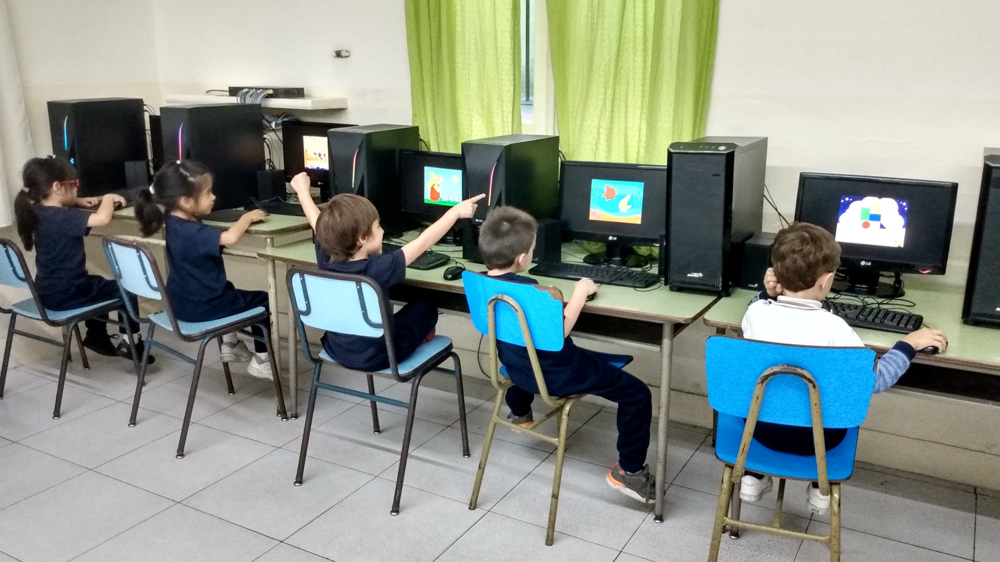
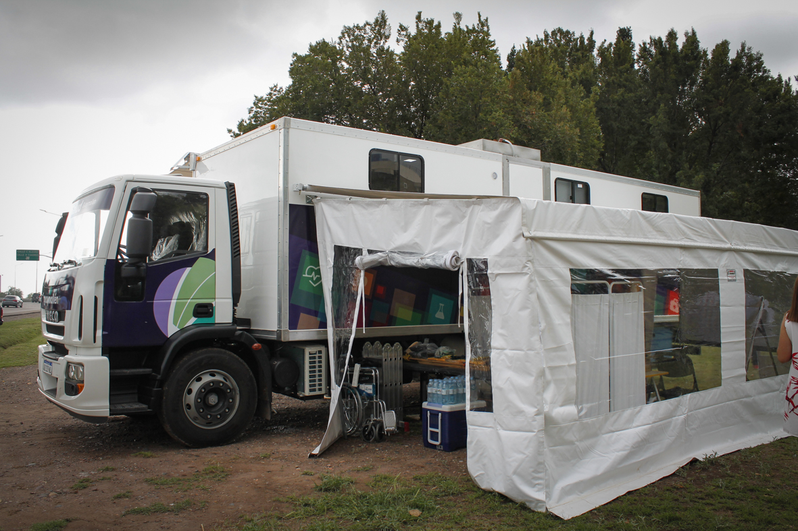
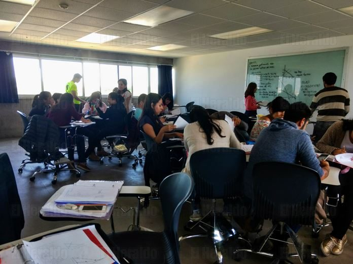

¿Como Ayudamos?
Conoce nuestros programas!
Nuestros programas
Conectando saberes
El programa funciona en contraturno al horario escolar, ofreciendo un espacio seguro con conectividad de alta velocidad y tutores pedagógicos. Utilizamos metodologías de aprendizaje basado en proyectos, donde los chicos no solo reciben ayuda con sus tareas, sino que también participan en talleres semanales de programación y robótica educativa, fomentando el pensamiento lógico y la resolución de problemas desde temprana edad.

Cuidando Vidas
Implementamos este programa a través de operativos sanitarios móviles que recorren los barrios más alejados para brindar atención primaria gratuita. Contamos con un cuerpo de profesionales voluntarios en áreas de pediatría, odontología y ginecología que realizan chequeos preventivos y vacunación. Además, el programa incluye un banco de medicamentos gestionado mediante donaciones y una línea de talleres de salud preventiva sobre higiene, salud reproductiva y prevención de enfermedades estacionales, asegurando que la información médica llegue a cada hogar de la comunidad.

Manos a la obra
Llevamos a cabo este programa mediante convenios con institutos técnicos y profesionales del sector privado que dictan clases teórico-prácticas en nuestra sede. Los cursos están divididos en cuatrimestres y cuentan con una instancia final de "práctica profesionalizante". Al finalizar, la ONG provee un kit de herramientas básico a los graduados con mejor desempeño para que puedan iniciar sus propios emprendimientos de manera inmediata.

Sé parte de Motor Solidario!
¿Como? Es muy facil! Contactate con nosotros y llena el formulario.